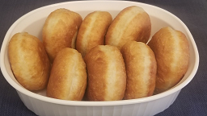
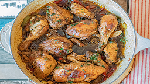
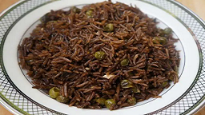
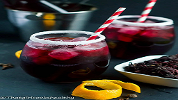

Dominican Pollo Guisado
All over Latin America pollo guisado is a staple at mealtime.
here for recipe

Jamaican Red Snapper
This fried snapper dish is a traditional Jamaican fish recipe called "escovitch."
here for recipe

Black Mushroom Rice
This Black Mushroom Rice (Diri ak Djon Djon) native to the northern part of Haiti.
here for recipe
Jamaican Cornmeal Pudding
Jamaican Cornmeal Pudding is a favorite dessert in Jamaica.
here for recipe
